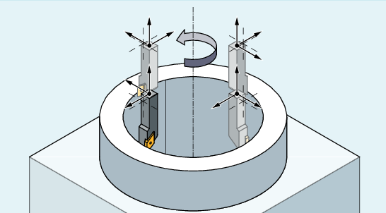
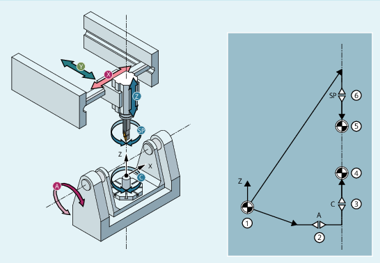

Die Drehinterpolationstransformation TRAINT, auch Interpolationsdrehen genannt, wird verwendet, um auf einer geeigneten Werkzeugmaschine (z. B. Fräsmaschine, Drehmaschine mit drei Linearachsen) die Umgebung einer einfachen Drehmaschine bereitzustellen, sodass NC-Befehle und Zyklen wie auf einer Drehmaschine funktionieren.
Die Drehbewegung wird durch die Transformation in eine Kreisbewegung der Linearachsen übersetzt. Entsprechend wird die Werkzeugschneide während der Bewegung immer auf das Drehzentrum ausgerichtet. Die Rotationsbewegung erfolgt also nicht durch eine Drehachse der Maschine, sondern durch Verfahrbewegungen der Linearachsen (x, y und z), woraus eine kreisförmige Bewegung resultiert. Dies unterscheidet das Interpolationsdrehen von der Funktion "Drehen auf Fräsmaschine".
Die Drehachse ist als Zentrum der Drehbearbeitung sowie der Spindel an beliebiger, mechanisch erreichbarer Werkstückposition wählbar und bei 4- oder 5-Achs-Maschinen frei im Raum orientierbar.
| Achtung |
Linearachsen an Werkzeugspindel gekoppeltDie Linearachsen sind beim Interpolationsdrehen an die Werkzeugspindel gekoppelt. Durch eine Drehung der Spindel kommt es automatisch zu Bewegungen der Linearachsen. Das gilt insbesondere auch, wenn es keine Bahnbewegung gibt, die Bahnbewegung wegen G4 steht oder der Bahnoverride auf 0 steht. Im Unterschied zu einer Drehmaschine hält ein NC-Stop auch die Bewegung der Spindel an. |
Das Interpolationsdrehen ist nur als Transformation auf Basis einer kinematischen Kette realisiert.
Es gelten folgende Bedingungen:
Die Drehachse liegt immer parallel zur Richtung der Werkzeugspindel (z-Achse bei der Drehbearbeitung).
Die Drehachse kann beispielsweise mit CYCLE800 oder Frames frei im Raum orientiert werden, muss aber während der Drehbewegung festbleiben.
Spindelrichtung und z-Achse des aktuellen WKS müssen parallel sein.
Das Zentrum der Drehinterpolationstransformation muss im aktuellen Nullpunkt des WKS liegen.
Die Drehbewegung wird in Bewegungen der Linearachsen durch die Transformation übersetzt. Entsprechend wird die Werkzeugschneide während der Bewegung immer auf das Drehzentrum ausgerichtet.
Zur Programmierung von Interpolationsdrehen kann auch CYCLE806 verwendet werden.
Direkt nach dem Einschalten der Transformation muss die WKS-Position y gleich 0 sein. Hierbei ist zu beachten, dass ohne Transformation die Werkzeuglängen im BKS ohne Berücksichtigung der Spindelposition (das heißt der tatsächlichen Orientierung des Werkzeugs) verwendet werden.
Ohne Transformation kommt es deshalb bei gedrehtem Werkzeug (SPOS ungleich 0 bzw. ungleich Einspannwinkel) zu einem Unterschied zwischen Werkzeugspitze und WKS-Position. Dieser muss vor TRAFOON entsprechend korrigiert werden (i. A. ist dann y im WKS ungleich 0, damit nach TRAFOON und unter Berücksichtigung der Drehung des Werkzeugs y gleich 0 ist).
Die Variablen $P_TRAINT_ROT_ANGLE und $P_TRAINT_SPOS_ANGLE unterstützen den Anwender bei der Herstellung der WKS-Position y gleich 0.
$P_TRAINT_ROT_ANGLE:
Die Variable $P_TRAINT_ROT_ANGLE liest die korrekte Framedrehung zur Anwahl der Transformation TRAINT.
$P_TRAINT_SPOS_ANGLE:
Die Variable $P_TRAINT_SPOS_ANGLE liest die korrekte Position der Spindel zur Anwahl der Transformation TRAINT.
Bei einer Drehmaschine entsteht die Gesamtbewegung aus der Drehbewegung durch die Drehspindel und der Bahnbewegung durch die Geometrieachsen X und Z. Eine Achse der Bahnbewegung hat keinen Einfluss auf die Drehbewegung und umgekehrt. Beim Interpolationsdrehen gibt es diese Unabhängigkeit nicht. Die Maschinenachsen X, Y und Z sorgen sowohl für die Drehbewegung als auch für die Bahnbewegung.
Die Gewichtung der Anteile können Sie über Maschinendaten (Wertebereich 0.001 bis 0.999) einstellen.
Weitere Informationen: Funktionshandbuch Transformationen
Das folgende Beispiel zeigt eine 5-Achs-Fräsmaschine in AC-Tisch-Kinematik.
① | Weltkoordinatensystem |
② | Rundachse A |
③ | Rundachse C |
④ | Werkstückbezugspunkt (Ende der Part-Kette) |
⑤ | Werkzeugbezugspunkt (Ende der Tool-Kette) |
⑥ | Spindel |